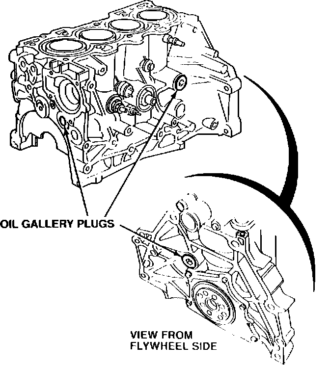

Engine - Oil Gallery Plugs Leak
91acura02
April 1, 1991
BULLETIN NO.
91-005
YEAR MODEL VIN APPLICATION
1990 INTEGRA ALL

Leaking Oil Gallery Plugs (Supersedes 91-005, dated January 21, 1991)
SYMPTOM
The oil pan gasket appears to be leaking, or there may be oil leakage in the oil filter area or around the lower timing belt cover.
PROBABLE CAUSE
One of the oil gallery plugs is loose enough to leak. (No matter which plug is leaking, the oil usually runs down the block and around the perimeter of the oil pan.)
DIAGNOSIS
Remove the oil filter and inspect the rear gallery plug (behind the rear engine mount).
It the rear plug is not leaking, remove the lower timing belt cover and inspect the gallery plug just behind the oil pump drive plate. (While the timing belt covers are removed, check the cam seals for leakage.)
If the timing belt-end plug is not leaking, remove the transmission and inspect the gallery plug behind the flywheel.
CORRECTIVE ACTION
Retorque the leaking gallery plug to 130 N-m (13.0 kg-m, 93 lb.ft.).
WARRANTY CLAIM INFORMATION
In warranty: The normal warranty applies.
Out-of-warranty: Any repair performed after warranty expiration may be eligible for goodwill consideration by the District Service Manager. You must request consideration, and get the DSM's decision, before starting work.
Gallery Plug- Operation Flat Rate
Retorque Number Time
Timing belt-end 110075 2.5 hours
Trans-end 111075 2.9 hour
Rear 112075 0.7 hour
Failed P/N: 11106-PR4-305
Defect code: 051
Contention code: B06